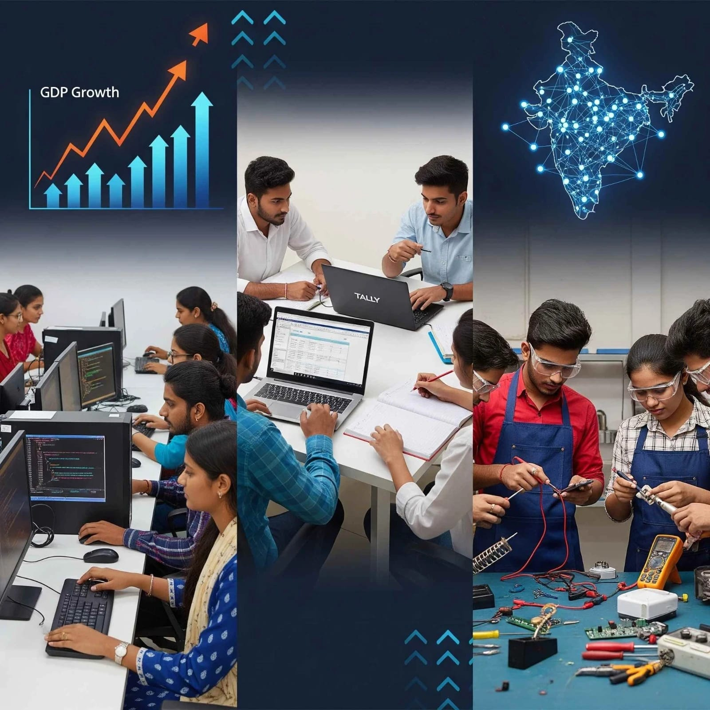

Vision
To build an inclusive ecosystem that enables accessible, affordable, and employment-oriented education and healthcare services, empowering communities towards sustainable livelihoods.
(As Auspicious Agency of Gandhi Foundation)
G Care Council is a collaborative development platform focused on skill development, healthcare access, social empowerment, and sustainable community transformation.

G Care Council (GCC) is a leading federation comprising 425 non-profit organizations dedicated to promoting skill development, improving access to primary healthcare, supporting environmental sustainability, enhancing education, and empowering communities across India.
GCC operates under the guidance of the Gandhi Foundation, acting as a collaborative platform that brings together NGOs, social enterprises, and development partners to implement scalable and impactful initiatives.
The Council maintains strong partnerships, affiliations, and program collaborations with major State and Central Government Ministries and Missions, including:
In addition, GCC is officially recognized by the Directorate General of Employment and Training (DGET), New Delhi. This recognition enables certification validation and facilitates registration in Employment Exchanges throughout India.
A clear institutional direction focused on inclusive growth, employability, healthcare access, and long-term social transformation.
To build an inclusive ecosystem that enables accessible, affordable, and employment-oriented education and healthcare services, empowering communities towards sustainable livelihoods.
G Care Council (GCC) is committed to bridging the gap between education, skill development, and employment by creating industry-ready human resources equipped to meet evolving market demands. The Council actively works towards strengthening community-based healthcare delivery systems while promoting social equity and economic inclusion, ensuring sustainable growth and equal opportunities for all sections of society.
GCC addresses critical development gaps through structured, demand-driven, skill-oriented, and employment-linked interventions.
India continues to face systemic challenges of youth unemployment and underemployment. Despite extensive Government interventions, a significant portion of the population, particularly in rural and semi-urban regions, remains underserved.
GCC addresses this critical gap by designing and implementing demand-driven, skill-oriented, and employment-linked programs aligned with national development priorities.
GCC delivers structured vocational education through affiliated training centres, focusing on competency, employability, certification, and experiential learning.
GCC supports progressive learning, certification, and career mobility through a flexible and competency-based pathway model.
GCC adopts a multi-entry and multi-exit system, enabling learners to:
The system supports career roles ranging from:
GCC maintains a robust quality assurance framework to ensure excellence, credibility, adaptability, and scalability across its institutional ecosystem.
GCC operates as an impact-driven platform with measurable outcomes in employability, healthcare access, entrepreneurship, and community ecosystem strengthening.
GCC operates with a strong focus on measurable social impact, including:
G Care Council positions itself as a convergence platform integrating:
This enables GCC to deliver scalable, sustainable, and replicable development models across regions.
With its integrated approach combining vocational education, healthcare innovation, and community development, G Care Council (GCC) plays a pivotal role in strengthening the ecosystem of skill development and social transformation in India. GCC remains committed to fostering inclusive growth, sustainable livelihoods, and nation-building through structured interventions and collaborative partnerships.